Date Taken: Fall 2025
Status: Completed
Reference: LSU Professor Daniel Donze, ChatGPT
Physical memory refers to the actual RAM installed in a computer system, while logical (or virtual) memory is an abstraction that allows programs to use more memory than is physically available by utilizing disk space as an extension of RAM. Logical memory provides each process with its own address space, which helps with isolation and security.
In more simpler terms, physical memory is the hardware component (RAM), while logical memory is a software-managed concept that allows for more flexible and efficient memory usage.
A multi-level page table is a hierarchical structure that breaks down the page table into multiple levels, allowing for more efficient memory usage and reduced memory overhead. In contrast, a single-level page table is a flat structure that maps virtual addresses directly to physical addresses. In a multi-level page table, the virtual address is divided into several parts, each part corresponding to a level in the hierarchy. This allows for smaller page tables at each level, which can be more easily managed and can reduce the amount of memory required for the page tables themselves. Overall, multi-level page tables are more scalable and efficient for systems with large address spaces compared to single-level page tables.
In more simpler terms, multi-level page tables break down the mapping process into smaller, more manageable pieces, while single-level page tables handle everything in one large table.
Memory is a critical component of a computer system that stores data and instructions for the CPU to access. It is organized in a hierarchical manner, with different levels of memory providing varying speeds and capacities. The main types of memory in a computer system include:
Program must be brought (from disk) into memory and placed within a process for it to be run. Main Memory and registers are only storage CPU can access directly.
Memory unit only sees a stream of: [addresses] → read requests and [adress & data] → write requests
Registers access is dont in one CPU clock (or less). Main memory can take many cycles, causing a stall. Cache sits between main memory and CPU registers
OS needs to partition memory for its own use and for use by multiple processes. Must implement strategies that ensures correct and efficent sharing or memory. Where possible, must keep processes from "bothering" each other. Must deal with issues like:
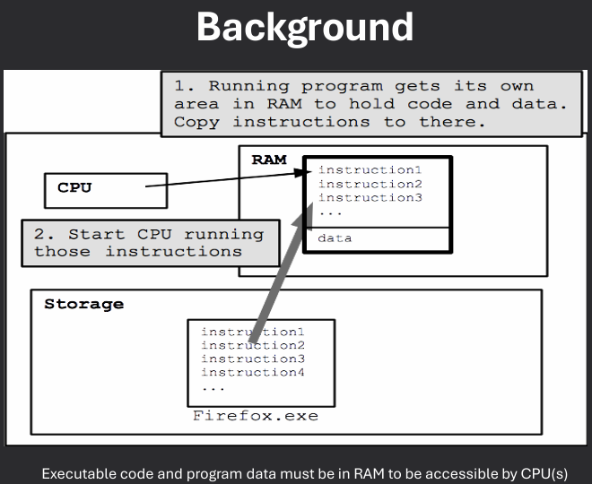
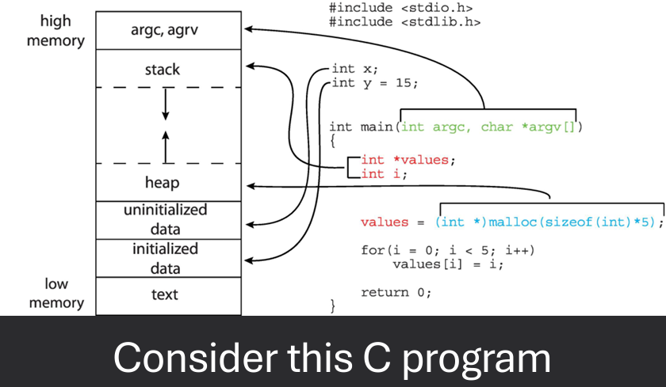
Address binding is the process of mapping logical addresses used by a program to physical addresses in memory. When will addresses for executable code and data be established? There are three main stages of address binding:
A logical address (or virtual address) is the address generated by the CPU during program execution. It is used by the program to access memory locations. A physical address is the actual address in the computer's physical memory (RAM) where data is stored.
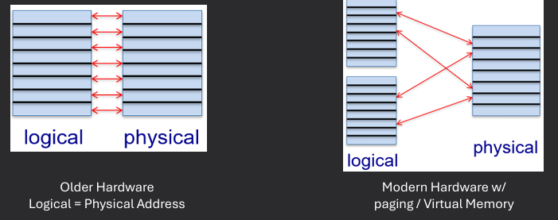
The Memory Management Unit (MMU) is a hardware component responsible for handling memory access and address translation in a computer system. It translates logical addresses generated by the CPU into physical addresses used by the memory hardware. The MMU also manages memory protection, ensuring that processes can only access memory locations they are authorized to use.
MMU - hardware maps logical to physical address at runtime. MMU relocation register provides base address. Physical addresses are generated by adding the base/relocation register's value to each logical address. Limit register provides the maximun offset that should be added to the base register.
Memory protection is a crucial function of the Memory Management Unit (MMU) that ensures the integrity and security of a computer system's memory. The MMU enforces access control policies by using mechanisms such as base and limit registers, which define the valid address range for each process. If a process attempts to access memory outside its allocated range, the MMU generates an exception, preventing unauthorized access and potential data corruption.
CPU must check memory access generated in user mode to be sire it is between base and limit for that user. Prevents processes from accessing memory not allocated to them. Instructions for loading the base and limit registers are privileged.
There are several memory management schemes used in operating systems to efficiently allocate and manage memory resources. Some common schemes include:
Main meory must support both OS and user processes. Process code/data is placed into a block of memory - this is called allocation. Memory is a limited resource; must allocate efficiently. Different types of management schemes exist:
Contiguous (sharing a common boundary/touching each other) memory allocation is a memory management scheme where each process is allocated a single contiguous block of memory. This approach simplifies memory management and allows for efficient access to memory locations. However, it can lead to fragmentation, where free memory is divided into small, non-contiguous blocks that may not be usable for new processes.
Contiguous allocation is one early method. Main memory usually into two partitions:
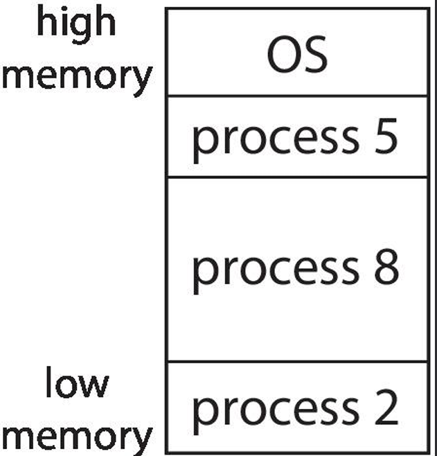
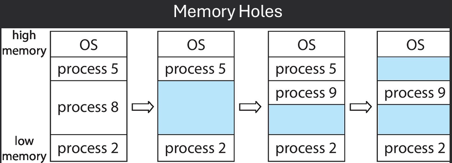
• A hole is an available block of memory, scatteredthroughout physical memory
• OS must know about both allocated areas and available holes
• When a process is loaded into memory, an available hole of sufficient size is chosen
• Contiguous allocation strategies use a "hole-picking" algorithm to decide where to place a process
There are several algorithms used to pick a hole for memory allocation in contiguous memory management. Some common algorithms include:
Fragmentation is a phenomenon that occurs in memory management when free memory is divided into small, non-contiguous blocks, making it difficult to allocate memory for new processes. There are two main types of fragmentation:
Internal fragmentation occurs when allocated memory blocks are larger than the requested memory size, leading to wasted space within the allocated blocks. This type of fragmentation can result in inefficient memory usage, as the unused space within the allocated blocks cannot be utilized by other processes. To mitigate internal fragmentation, memory allocation strategies such as using smaller fixed-size blocks or implementing dynamic memory allocation techniques can be employed.
Internal fragmentation - hole selected is usually not a perfect fit, some memory goes unused. Sometimes the hole is big enough to get reused. But if the hole is too small, it is inefficient to track it, so some memory is temporarily "wasted".
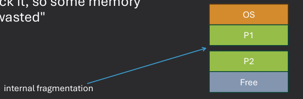
External fragmentation occurs when free memory is divided into small, non-contiguous blocks, making it difficult to allocate memory for new processes. This type of fragmentation can lead to inefficient memory usage and reduced system performance. To mitigate external fragmentation, techniques such as compaction (rearranging memory contents to create larger contiguous blocks) or using non-contiguous memory allocation schemes like paging or segmentation can be employed.
External fragmentation - processes "coming and going" causes holes to be allocated and released, which fragments memory.
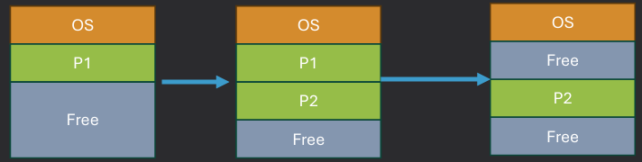
Can't fix internal fragmentation in contiguous allocation schemes if small holes aren't tracked
Can potentially fix external fragmentation by compacting the memory (defragging it)
Can only do compacion is address binding is at execution time (dynamic)
Problem with I/O decides: DMA doesn't like compaction. Don't allow compaction during I/O. Do I/O into OS buffers that aren't subject to compaction
Overlays are a memory management technique used to optimize memory usage by loading only the necessary parts of a program into memory at any given time. This approach allows larger programs to run on systems with limited memory by dividing the program into smaller, manageable sections called overlays. When a specific overlay is needed, it is loaded into memory, replacing another overlay that is no longer required. This technique helps to conserve memory and improve system performance, especially in environments with constrained resources.
Overlays allow writing programs larger than available physical memory. Programmer partitions program into "chunks" A different chunk is loaded when needed. Complex programming model, since programmer is responsible for laying out the chunks. Must be careful to avoid "ping-pong" effect.
Dynamic loading is a memory management technique where a program's code and data are loaded into memory only when they are needed during execution. This approach allows for more efficient use of memory, as it reduces the initial memory footprint of a program and enables the loading of only the necessary components. Dynamic loading is often used in conjunction with shared libraries, where common code can be loaded once and shared among multiple programs, further optimizing memory usage.
In order memory allocation schemes, a program instructions and data must be all present in memory
With dynamic loading, load routines only when they are needed. All routines are kept on disk in a relocatable load format. The main program is laoded into memory and is executed. When a routine needs to call another routine, teh calling routine first checks to see whether the other routine had been loaded. If it has not, the relocatable linking loader is called to load the desired routine into memory and to update the program's address tables to reflect this change. Then control is passes to the newly loaded routine.
Dynamic loading has several impacts on memory management and program execution:
Good memory utilization since infrequently used code is loaded as needed. Implemented by the programmer via system calls to load new chunks of code. Unnecessary with modern virtual memory systems (soon). Still heavily used in Java/Andriod platforms.
Dynamic linking is a memory management technique where a program's external libraries or modules are linked to the program at runtime rather than at compile time. This approach allows for more efficient use of memory, as multiple programs can share the same library code in memory, reducing redundancy. Dynamic linking also enables easier updates and maintenance of libraries, as changes to a shared library can be made without recompiling the programs that use it.
Postpone linking with libraries until program is executing. Library routines are not included in the object code for the program; instead, a stub is included. When called, stub is replaced with address of actual routine and executed. Allows code sharing. OS must track if library is currently in memory and load it on demand if it isn't.
Linking libraries can be done in two main ways: static linking and dynamic linking.
Dynamic linking is particularly useful for shared libraries, where multiple programs can use the same library code without each having its own copy. This not only saves memory but also allows for easier updates and maintenance of the library code. When a shared library is updated, all programs that use it automatically benefit from the changes without needing to be recompiled. Deferred binding is a key feature of dynamic linking, where the actual linking of library functions occurs only when they are called for the first time during program execution.
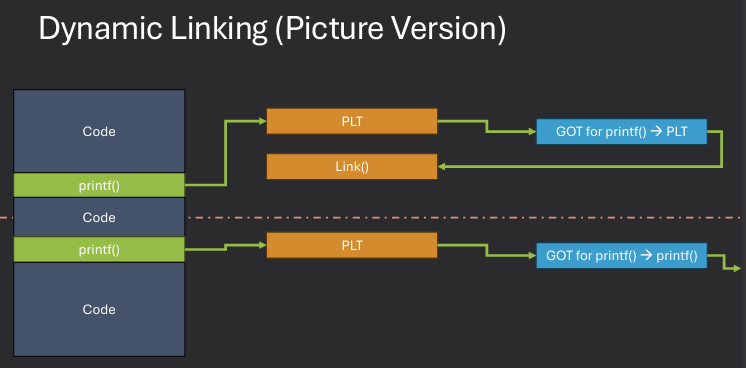
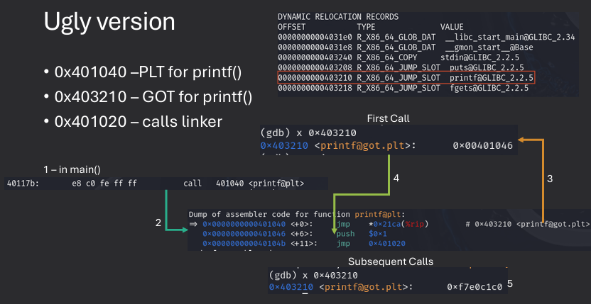
Swapping is a memory management technique used in operating systems to temporarily move inactive processes from main memory to secondary storage (such as a hard disk) to free up memory for active processes. When a swapped-out process is needed again, it is brought back into main memory. This technique allows the operating system to manage memory more efficiently and enables the execution of larger programs than the available physical memory.
Swapping - moving entire processes out of memory disk (and back) as needed.
Advantage: Simulates a large physical memory, thus increasing the degree of multiprogramming.
Disadvantage: Large transfer time. Disk is orders of magnitude slower than main memory.
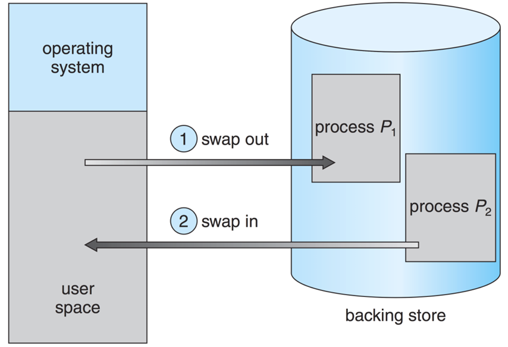
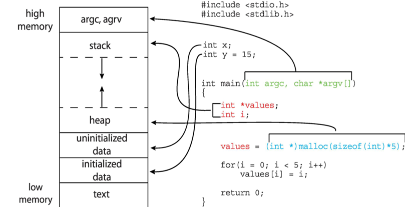
Segmentation is a memory management technique used in operating systems that divides a program's memory into variable-sized segments based on logical divisions, such as code, data, and stack segments. Each segment can grow or shrink independently, allowing for more flexible memory allocation and better utilization of memory resources. Segmentation also provides a way to implement protection and sharing of memory segments among different processes.
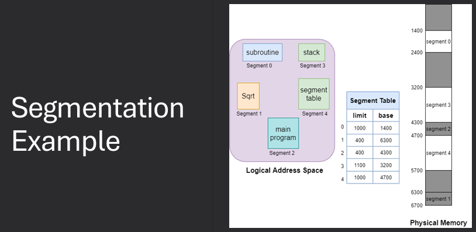
Compiler/CPU generates addresses that look like: (SEGMENT#, OFFSET). Segment table is queried to find the physical memory address where the segment resides. Then use offset to access the correct location in physical memory
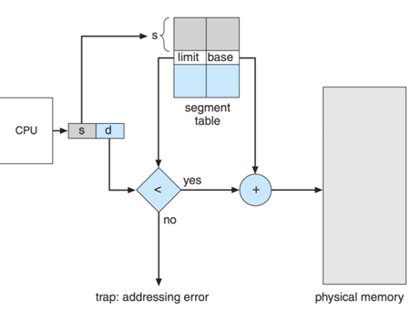
No internal fragmentation. All portions of a segment likely have the saem semantic meaning. Code Segment, make entire segment R/X. Data Segment, make entire segment R or R/W as appropriate. Sharing is easy, make segments in different processes share same physical addresses
External fragmentation. Variable sized segments lead to external fragmentation. Must use compaction or paging to solve this. Dynamic size of segments causes external fragmentation problem to return. The need for compaction scheme again
Paging is a memory management technique used in operating systems that divides a program's memory into fixed-size blocks called pages. The physical memory is also divided into blocks of the same size called frames. When a program is executed, its pages are loaded into available frames in physical memory, allowing for non-contiguous allocation of memory. This approach helps to eliminate fragmentation and allows for more efficient use of memory resources.
Physical address space is divided into fixed size blocks called frames. Size is generally a power of 2. Virtual address space is divided into blocks of same size called pages. Most modern systems use 4096 bytes (4k) for pages & frames
A page table is used to translate virtual to physical addresses. Map pages frames using page table. OS keeps track of free frames. If a program requires N pages, find and map N free frames.
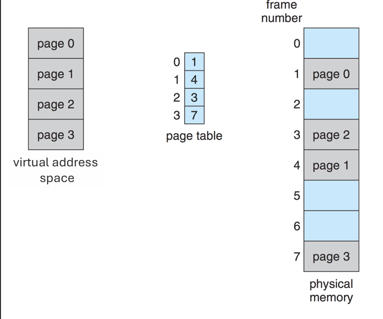
Virtual address is divided into: page number (p) and page offset (d). Page number used as index into page table. Page table contains base address of each page in physical memory. Frame number (f) combined with page offset (d) to define physical memory address that is sent to memory unit
Address generated by CPU have two components.
Page number (p) - used as an index into a page table which contains base address of each frame in physical memory.
Page offset (d) - combined with base address to define the physical memory address that is sent to the memory unit.
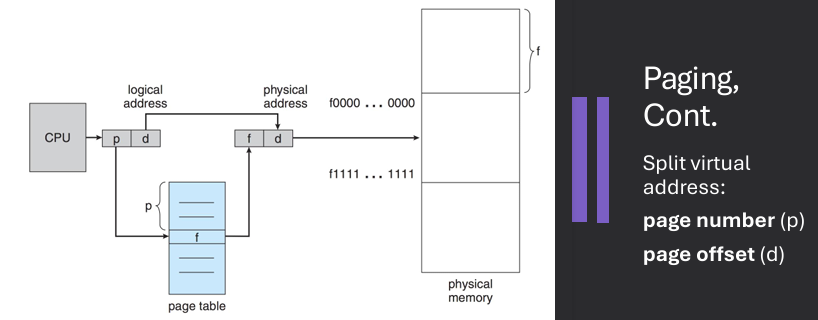
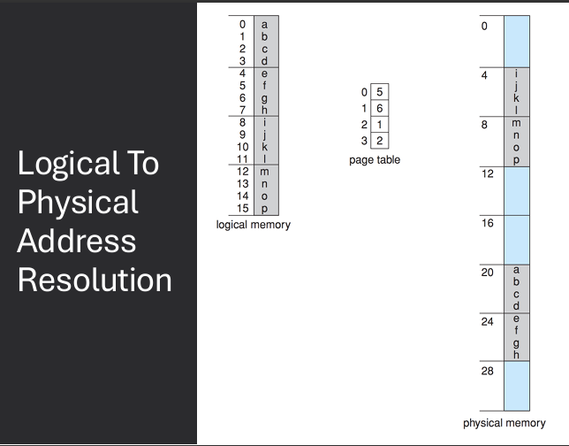
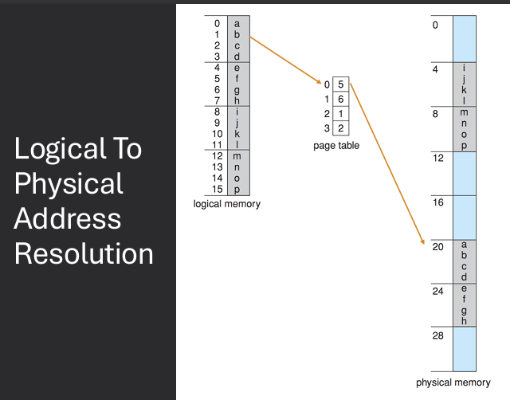
Example: 32-bit logical address space with 4 KB page size. How many pages are there? 2^32 / 2^12 = 2^20 pages. If each page table entry is 4 bytes, how large is the page table? 2^20 * 4 bytes = 4 MB.
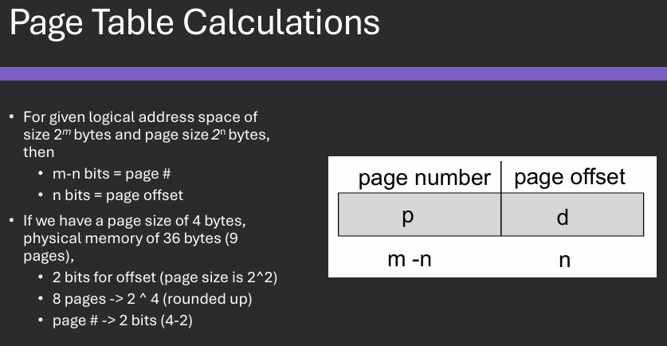
Sharing in paging allows multiple processes to share the same physical memory pages, which can lead to more efficient memory usage. This is typically achieved by mapping the same physical frame to different virtual pages in the page tables of different processes. Shared pages are often used for common code libraries or read-only data that multiple processes need to access.
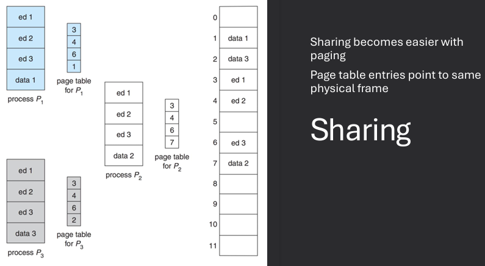
Paging eliminates external fragmentation but can suffer from internal fragmentation. Since pages are fixed size, if a process does not use the entire page, the unused portion of the page is wasted, leading to internal fragmentation.
Eliminates external fragmentaion by allowing address space to be non-contiguous and align to block boundaries. Page does suffer from interanl fragmentaion since it's unlikely program will fir exactly into its allotted frames
Assuming a page size is 2,048 bytes, a process of 72,766 bytes will need 35 pages plus 1,086 bytes.
It will be allocated 36 frames, resulting in internal fragmentation of 2,048 −- 1,086 = 962 bytes.
In the worst case, a process would need n pages plus 1 byte. It would be allocated n + 1 frames, resulting in internal fragmentation of almost an entire frame.
Page table design is a crucial aspect of memory management in operating systems. The page table is a data structure that maps virtual addresses to physical addresses, allowing the operating system to manage memory efficiently. There are several design considerations for page tables, including size, structure, and access speed.
One page table per process. Assume an address space of 2^32 bytes (4GB). Onemillion entries per page table if frame size is 4k. Challenges: storage size and access time.
There are several ways to implement page tables, each with its own advantages and disadvantages. Some common implementations include:
Page table storage challenges - hardware registers and main memory. Hardware registers are faster, but too costly for large page tables. Problem with storage in main memory: requires physical memory accesses to page table to then access intended memory locations
In this implementation, the page table is stored in main memory. When a process needs to access a memory location, the operating system retrieves the corresponding page table entry from main memory to translate the virtual address to a physical address. This approach is simple and flexible, but it can lead to performance issues due to the additional memory access required for page table lookups.
One page table per process. Page Table Base Register (PTBR) points to page table in memory. Page Table Length Register (PTLR) indicates size of page table. Problem: Every data or instruction access costs two memory accesses - Access the page table and Access intended memory locations. Optimization: Translation Lookaside Buffer (TLB).
A Translation Lookaside Buffer (TLB) is a small, fast cache used in memory management to store recent translations of virtual addresses to physical addresses. The TLB is designed to improve the performance of address translation by reducing the number of memory accesses required for page table lookups. When a process accesses a memory location, the TLB is checked first to see if the translation is already cached. If it is, the physical address can be retrieved quickly without accessing the page table in main memory. If the translation is not in the TLB, a page table lookup is performed, and the result is stored in the TLB for future use.
TLB is a block of associative memory. Series of Key / Value pairs - Fancy Hardware allows ALL keys to be compared simultaneously and O(1) operation. Integrated into the hardware instruction pipeline. Entries are a mapping of page # ←→ physical frame. If the page # is found, this is a TLB hit - Otherwise, it is a TLB miss.
TLB caching works by storing recent translations of virtual addresses to physical addresses in a small, fast cache called the Translation Lookaside Buffer (TLB). When a process accesses a memory location, the TLB is checked first to see if the translation is already cached. If it is, the physical address can be retrieved quickly without accessing the page table in main memory, resulting in a TLB hit. If the translation is not in the TLB, a page table lookup is performed, and the result is stored in the TLB for future use, resulting in a TLB miss.
The TLB must be kept small (it's on the CPU chip) - Between 32 and 1024 entries. Lookups check TLB first, then page table if not found - Cache that page after
Hit ratio = percentage of time that TLB has the request page. Small # of pages in TLB results in good hit ratio - Both spatial and temporal locality help here and Bytes from a frame that are accessed frequently are likely to have their page number in TLB.
Multilevel page tables are a hierarchical structure used in memory management to efficiently map virtual addresses to physical addresses. In this approach, the page table is divided into multiple levels, with each level containing a smaller page table that maps a portion of the virtual address space. This allows for more efficient use of memory, as only the necessary portions of the page table need to be loaded into memory at any given time. Multilevel page tables also help to reduce the size of the page table, making it more manageable and easier to access.
32-bit systems with 4k frames need 1 million entries in a page table! Larger tables means slower access times. Slow address resolutions can bog down an entire system.
Solution
Multi-level page tables
Rather than one table with 2^20 entries, have multiple smaller tables
2^10 + 2^10
Hierarchical page tables are a type of multilevel page table structure used in memory management to efficiently map virtual addresses to physical addresses. In this approach, the page table is organized into multiple levels, with each level containing a smaller page table that maps a portion of the virtual address space. This hierarchical structure allows for more efficient use of memory, as only the necessary portions of the page table need to be loaded into memory at any given time. Hierarchical page tables also help to reduce the size of the page table, making it more manageable and easier to access.
Break up the logical address space into multiple page tables. Address splits into entries for each level. Resolve tables in order to obtain final address.
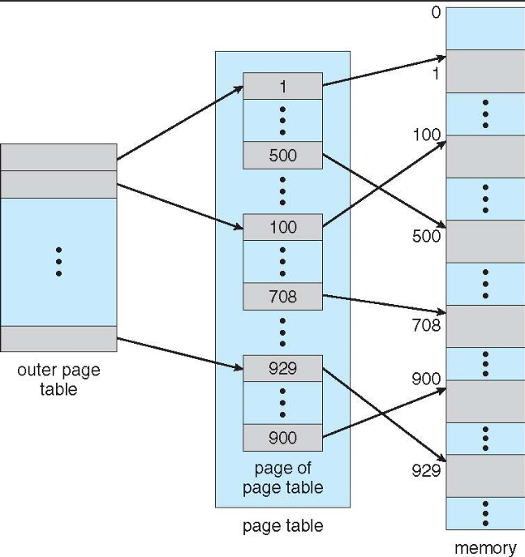
In a two-level paging system, the virtual address is divided into three parts: the first part is used to index into the first-level page table, the second part is used to index into the second-level page table, and the third part is the offset within the page. This hierarchical structure allows for more efficient memory management, as only the necessary portions of the page tables need to be loaded into memory at any given time. The two-level paging system helps to reduce the size of the page tables and improves access times for memory operations.
A logical address (on 32 bit machine with 4k page size) is divided into: a page number consisting of 20 bits and a page offset consisting of 12 bits.
Since the page table itself paged, the page number is further divided into: a 10 bit outer page table, a 10 bit inner page table, and a 12 bit page offset.
Where p_1 is an index into the outer page table, and p_2 i the displacement within the page of the inner page table. Known as forward-mapped page table.
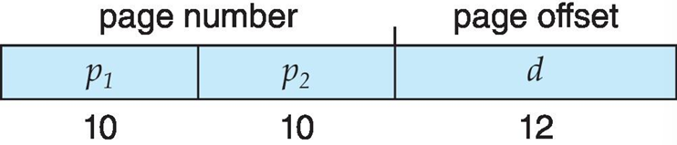
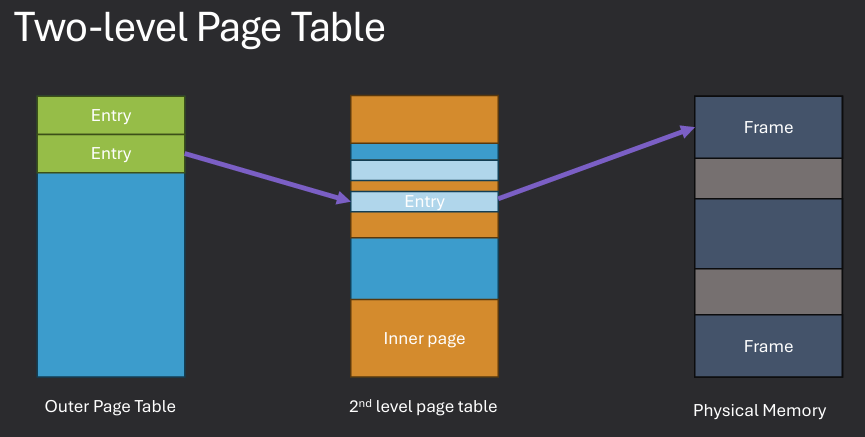
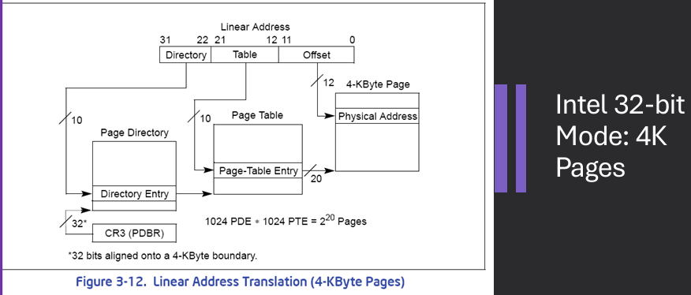
Physical Address Extension (PAE) is a memory management feature used in 32-bit operating systems to extend the physical address space beyond the traditional 4 GB limit. PAE allows the operating system to access up to 64 GB of physical memory by using a larger page table structure and additional address bits. This is achieved by introducing a third level of page tables, which enables the mapping of larger physical addresses while still maintaining compatibility with existing 32-bit applications.
Each virtual address is still 32 bits. Means each process is still limited to 4GB. Supports more RAM for 32-bit Intel processors. Extends size of physical address to 36 bits, to allow 64GB of RAM.
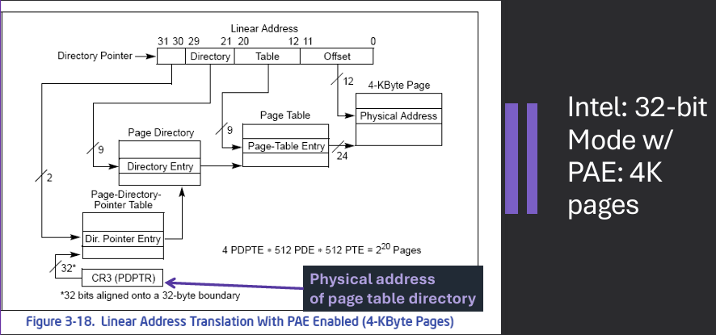
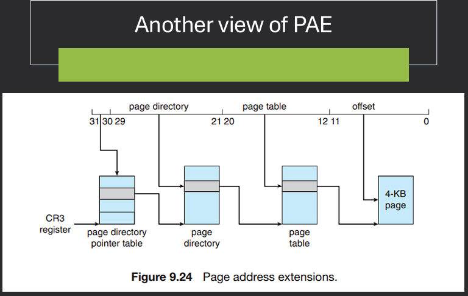
An inverted page table is a memory management technique used in operating systems to reduce the size of the page table by storing only one entry for each physical frame in memory, rather than one entry for each virtual page. In this approach, the page table is organized as a hash table, where each entry contains information about the virtual page that is currently mapped to a specific physical frame. This allows for more efficient use of memory, as the size of the page table is proportional to the amount of physical memory rather than the size of the virtual address space.
Track all physical frames in a global page table - Opposed to each process having its own table. One entry for each physical frame (real page) of memory. Entry consists of the virtual address of the page stored in that real memory location, with PID as a key.
Decreases memory needed to store each page table, but increases time needed to search the table when a page reference occurs. Table organized by physical frames, so whole table may need to be searched for a specific virtual address.
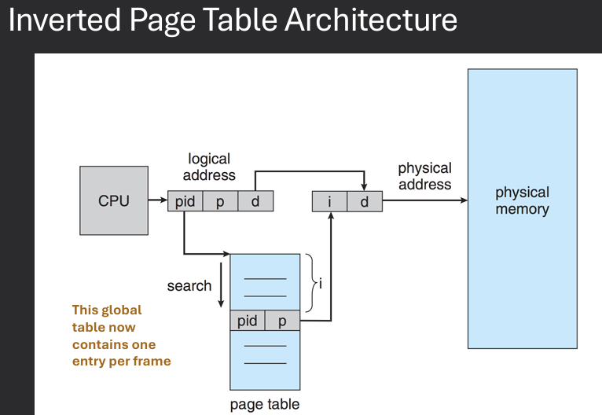
A hashed page table is a memory management technique used in operating systems to efficiently map virtual addresses to physical addresses using a hash function. In this approach, the page table is organized as a hash table, where each entry contains information about the virtual page that is currently mapped to a specific physical frame. The hash function is used to compute the index into the hash table based on the virtual address, allowing for faster lookups and reduced memory usage compared to traditional page tables.
Common in address spaces larger than 32 bits. The virtual page number is hashed into a page table - Each entry in the hash table has a linked list of elements hashed to the same location - page table entries. Each element contains (1) the virtual page number (2) the value of the mapped page frame (3) a pointer to the next element.
Virtual page numbers are compared in this chain searching for a match - If a match is found, the corresponding physical frame is extracted. Variation for 64-bit addresses is clustered page tables - Like hashed page tables but each entry refers to several pages (such as 16) rather than 1 and Especially useful for sparse address spaces, where memory references are non-contiguous and scattered.
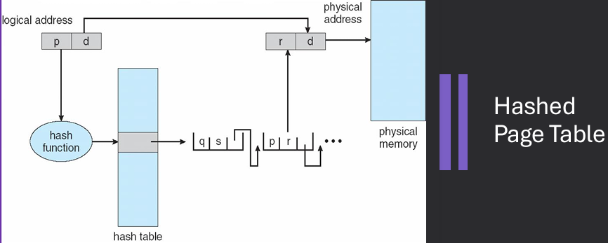
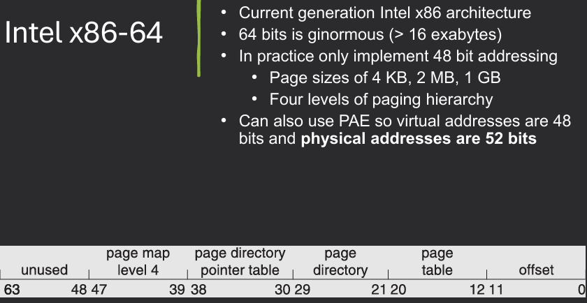
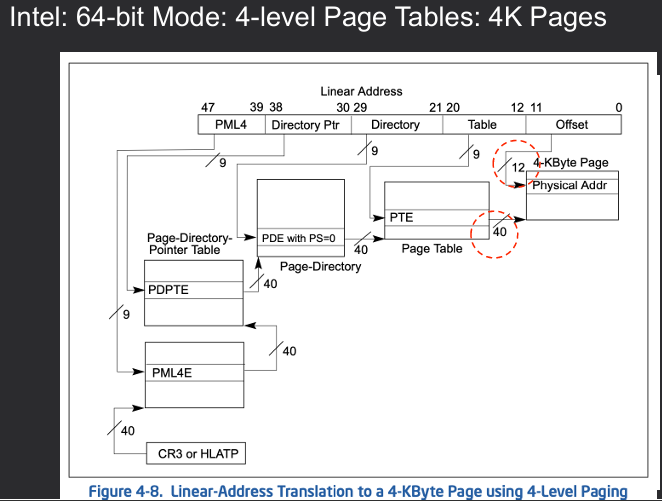
As virtual memory systems continue to evolve, several challenges arise that need to be addressed to ensure efficient memory management and optimal system performance. Some of these challenges include:
So far, we've assumed all allocated pages can be mapped to frames of physical memory 1 to 1. Virtual memory allows overflowing pages to disk (or compressing them) to simulate a larger physical memory. Thus, while some allocated pages are mapped to frames of physical memory, some are "swapped out".
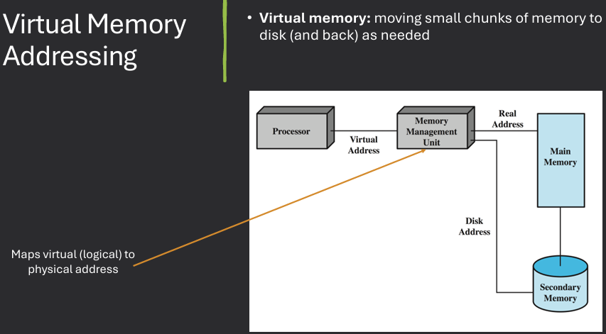
Advantages:Logical address space can be much larger than physical memory. Need only part of a program in memory for execution. Will need memory to be swapped in and out from disk (on demand)
Demand paging and/or demand segmentation
Demand paging is a memory management technique used in operating systems where pages of a program are loaded into memory only when they are needed during execution. This approach allows for more efficient use of memory, as it reduces the initial memory footprint of a program and enables the execution of larger programs than the available physical memory. When a page is accessed that is not currently in memory, a page fault occurs, and the operating system retrieves the required page from secondary storage (such as a hard disk) and loads it into memory.
Idea: Bring pages into memory only when they are referenced (needed). Less I/O to transfer a page than a whole process (multiple pages). Lowers pressure on memory (unused pages not mapped). More processes at once - increase degree of multiprogramming.
Need to answer:
What happens when a page is referenced? When a page is referenced that is not in memory, a page fault occurs. The operating system retrieves the required page from secondary storage and loads it into memory.
What if physical memory is full? If physical memory is full, the operating system must select a page to evict from memory to make space for the new page. This is typically done using a page replacement algorithm.
To enable virtual memory, the operating system must implement several key components, including a page table to map virtual addresses to physical addresses, a mechanism for handling page faults, and a page replacement algorithm to manage memory when it becomes full. Additionally, the operating system must ensure that the necessary hardware support is in place, such as a Memory Management Unit (MMU) to facilitate address translation and access control.
To keep track of whether pages are in memory or not, use a bit in each page table entry. valid → in memory. invalid → on disk.
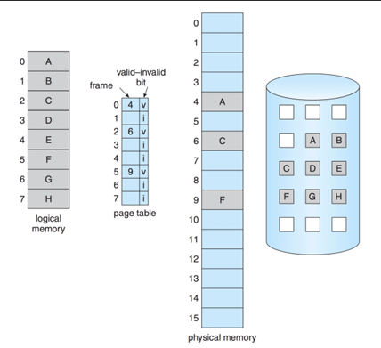
A page fault is an event that occurs in a virtual memory system when a program attempts to access a page that is not currently in physical memory. When a page fault occurs, the operating system must retrieve the required page from secondary storage (such as a hard disk) and load it into physical memory. This process involves several steps, including saving the state of the program, locating the required page on disk, loading it into memory, updating the page table, and resuming the program's execution.
Page faults are references to pages that are currently swapped out. Page fault cause the current instruction to be halted and a trap to the OS occurs, to handle the fault - Page Fault Service
The page fault service is a component of the operating system that handles page faults in a virtual memory system. When a page fault occurs, the page fault service is responsible for retrieving the required page from secondary storage (such as a hard disk) and loading it into physical memory. This process involves several steps, including saving the state of the program, locating the required page on disk, loading it into memory, updating the page table, and resuming the program's execution.
Requested address is examined to determine if it's legal - Invalid address access results in process termination. Disk operation is scheduled to bring in the needed page from disk to memory. A free frame of main memory is found. Page table is modified to indicate that the page is valid and in memory. The halted instruction is then restarted. This entire process is handled by interactions between hardware and the OS - Completely transparent to applications.
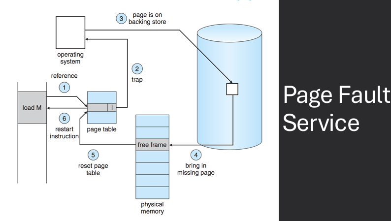
Let p = page fault rate (probability of page fault)
Effective Access Time (EAT) = [(1 - p) * mem_access_time] + [p * (page_fault_service_time)]
If p is large at all, performance can really suffer - Longer to run page fault service than memory access. Want to make sure the "right" pages are in memory and the "right" pages remain swapped out. Single instruction may cause multiple page faults - Locality rules make it rare, however.
The allocation of frames in physical memory is a crucial aspect of memory management in operating systems. Frames are fixed-size blocks of physical memory that are used to store pages of virtual memory. When a process is executed, its pages are loaded into available frames in physical memory. The operating system is responsible for managing the allocation of frames to ensure efficient use of memory resources and to prevent issues such as fragmentation and thrashing.
Each process needs some minimum # of frames to make progress. Use different allocation schemes:
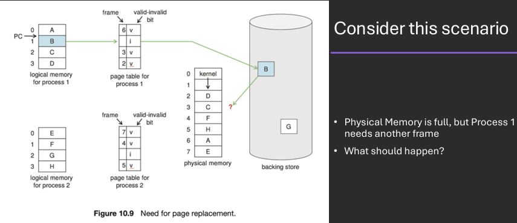
Page replacement is a memory management technique used in operating systems to manage the allocation of physical memory frames when a page fault occurs and there are no free frames available. When a page fault occurs, the operating system must select a page to evict from memory to make space for the new page. This is typically done using a page replacement algorithm, which determines which page to remove based on various criteria, such as the least recently used (LRU) or the first-in-first-out (FIFO) approach. The goal of page replacement is to minimize the number of page faults and optimize memory usage.
Occasionally need to evict a page to make space for a page that will be read from disk. Note that this can be costly if not done well!
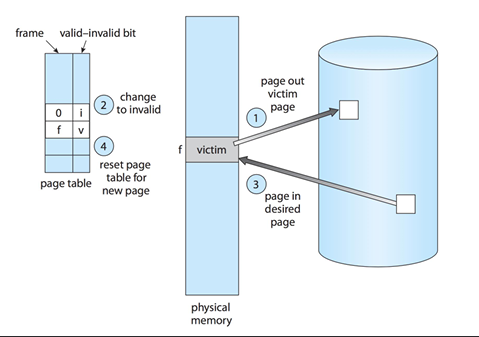
There are several page replacement algorithms used in operating systems to determine which page to evict from memory when a page fault occurs.
When a page fault occurs, the operating system will need to decide where to load the new page from secondary storage, and which pages to evict.
Goal - minimize the number of page faults, as servicing a page fault can be time-consuming
Performance - depend on the specific access patterns of programs and the workload of the system
In practice, many modern operating systems use variants or combinations of these algorithms to achieve efficient memory management
The FIFO (First-In, First-Out) page replacement algorithm is a simple and straightforward approach used in operating systems to manage memory when a page fault occurs. In this algorithm, the oldest page in memory (the one that has been in memory the longest) is selected for eviction when a new page needs to be loaded. The FIFO algorithm operates on the principle of "first come, first served," meaning that pages are replaced in the order they were brought into memory, regardless of their usage or importance.
Approach:
Evict the oldest page (Queue of pages)
Does not reset order if accessed again
Example:
3 Frames of memory, 5 virtual pages
9 Total Page Faults
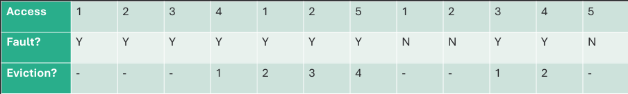
Same Approach
Now:
4 Frames of memory, 5 virtual pages
10 Total Page Faults
Belady's Anomaly: Sometimes adding more memory increases page faults!
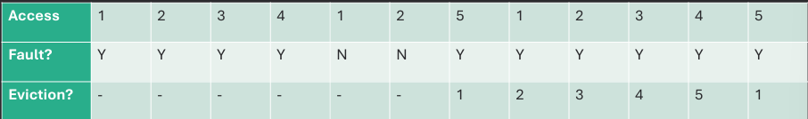
FIFO (First-In, First-Out) page replacement algorithm is simple to implement and understand, but it has some drawbacks. One of the main issues with FIFO is that it does not take into account the usage patterns of pages, which can lead to suboptimal performance. For example, a frequently used page may be evicted simply because it was loaded into memory earlier than other pages. Additionally, FIFO can suffer from Belady's Anomaly, where increasing the number of frames allocated to a process can actually lead to an increase in the number of page faults.
Native strategy.
Problem: FIFO doesn't pay attention to the access pattern for the page! - Blindly kills the most elder page, regardless of how useful it may be.
The oldest page isn't necessarily the one that should be evicted - It may be more important! Global tables / variables, Core functions, etc.
The optimal page replacement algorithm is a theoretical approach used in operating systems to manage memory when a page fault occurs. In this algorithm, the page that will not be used for the longest period of time in the future is selected for eviction when a new page needs to be loaded. The optimal algorithm is considered the best possible page replacement strategy, as it minimizes the number of page faults by making the most informed decision based on future access patterns. However, it is not practical for real-world implementation, as it requires knowledge of future memory accesses, which is typically not available.
What would be the best possible approach? To replace the page that will not be used for the longest period of time.
In practice, we cannot predict the future!
The optimal algorithm is therefore used to measure the performance of other algorithms - Serves as a lower bound (minimum number of page faults).
Approach:
Evict page that will not be used for longest period of time
Example:
4 Frames of memory, 5 virtual pages
6 Total Page Faults
The LRU (Least Recently Used) page replacement algorithm is a widely used approach in operating systems to manage memory when a page fault occurs. In this algorithm, the page that has not been used for the longest period of time is selected for eviction when a new page needs to be loaded. The LRU algorithm operates on the principle that pages that have been used recently are more likely to be used again in the near future, while pages that have not been used for a long time are less likely to be needed. This approach helps to minimize the number of page faults and improve overall system performance.
Approach:
Evict page that was used the farthest in the past
Example:
4 Frames of memory, 5 virtual pages
8 Total Page Faults
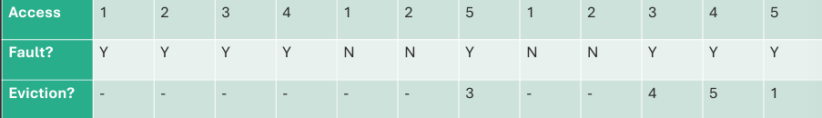
The LRU (Least Recently Used) page replacement algorithm is effective in reducing the number of page faults by considering the recent usage patterns of pages. However, implementing LRU can be challenging due to the need to track the order of page accesses. Common implementations include using counters or timestamps to record when each page was last accessed, or using a stack to maintain the order of page usage. While LRU generally performs well in practice, it can still suffer from certain access patterns that lead to suboptimal performance.
Hope is that least recently used roughly measures "won't use for longest time". Ideal in terms of minimizing page faults.
Issue: Implementation Difficulty
Hardware can be expensive
Clock / Time → Needs hardware
Stack approach → Implementation complexity (extra stack per process)
Without hardware, LRU is approximate
One way to implement the LRU (Least Recently Used) page replacement algorithm is by using counters. In this approach, each page in memory is associated with a counter that is updated every time the page is accessed. When a page fault occurs and a page needs to be evicted, the operating system selects the page with the lowest counter value, indicating that it has not been used for the longest period of time. This method provides a straightforward way to track page usage and make informed decisions about which pages to evict.
CPU has a logical clock/counter (incremented on each instruction or memory reference). Whenever a page is referenced, the counter value is attached to the page. Page replacement requires searching the pages to find the smallest counter value.
Challenge
Efficiently updating & finding the least counter, which may not be trivial in large systems.
Not feasible w/o hardware support
Another way to implement the LRU (Least Recently Used) page replacement algorithm is by using a stack data structure. In this approach, pages are organized in a stack based on their usage, with the most recently used pages at the top and the least recently used pages at the bottom. When a page is accessed, it is moved to the top of the stack. When a page fault occurs and a page needs to be evicted, the operating system simply removes the page at the bottom of the stack, which represents the least recently used page. This method provides an efficient way to track page usage and make eviction decisions.
Keep a stack of page numbers. When a page is referenced, remove it from the stack and place it at the top. The page at the bottom of the stack is the least recently used. No searching for the LRU page, but need to find pages to move them to the top of the stack.
Challenge - Overhead to update order on every access
The approximation of the LRU (Least Recently Used) page replacement algorithm is a technique used in operating systems to provide a similar level of performance to LRU without the complexity and overhead of tracking exact page usage. This approach typically involves using a reference bit or a similar mechanism to indicate whether a page has been accessed recently. When a page fault occurs, the operating system can use this information to make informed decisions about which pages to evict, approximating the behavior of LRU while reducing the implementation complexity.
Without sufficient hardware support, must approximate LRU r. Cheaper to implement. One way of approximating LRU.
Another approximation of the LRU (Least Recently Used) page replacement algorithm involves using a combination of reference bits and counters to provide a more nuanced view of page usage. In this approach, each page is associated with a reference bit and a counter that tracks the number of times the page has been accessed. The operating system periodically updates the counters based on the reference bits, allowing it to make more informed decisions about which pages to evict when a page fault occurs. This method provides a balance between accuracy and implementation complexity, approximating LRU behavior while reducing overhead.
The Second Chance page replacement algorithm is an approximation of the LRU (Least Recently Used) algorithm that provides a simple and efficient way to manage memory when a page fault occurs. In this approach, each page in memory is associated with a reference bit that indicates whether the page has been accessed recently. When a page fault occurs and a page needs to be evicted, the operating system checks the reference bit of the pages in a circular manner. If the reference bit is set to 1, the page is given a "second chance" and its reference bit is cleared. If the reference bit is 0, the page is evicted. This process continues until a page is found for eviction.
Approach:
FIFO, but give pages a "second chance"
Gets set to 1 if the page is referenced
IF a page needs to be evicted, go through list
If reference bit = 0, evict page
If reference bit = 1, clear it (set to 0) and move on
Example:
4 Frames of memory, 5 virtual pages
8 Total Page Faults
Thrashing is a phenomenon that occurs in virtual memory systems when a process spends more time swapping pages in and out of memory than executing its instructions. This situation arises when the working set of a process exceeds the available physical memory, leading to a high rate of page faults. As a result, the operating system is forced to continuously load and unload pages from secondary storage, causing significant performance degradation and making the system unresponsive.
Thrashing is when too much swapping occurs. Example: Page 3 evicts page 1, the page 1 evicts page 3, then page 3 evicts page 1, etc. CPU utilization drops - OS is busy swapping pages rather than executing instructions.
Paging work because of the locality exhibited by programs. But when minimal memory requirements can't be met, lots of swapping.
Low CPU utilization, tons of I/O ==> OS may try to increase CPU utilization by increasing the number of processes. Make thrashing even worse. Negatively impacts system performance. More processes => more frames needed => more page faults => more I/O => lower CPU utilization.
The process working set is a concept in operating systems that refers to the set of pages that a process is currently using or has recently used. The working set is important because it helps to determine the amount of physical memory that should be allocated to a process in order to minimize page faults and optimize performance. By keeping the working set of a process in memory, the operating system can reduce the number of page faults and improve overall system responsiveness.
A working set defines the set of pages frames a process referenced at a given time interval. Pages a process is "currently" using (locality taken into account).
Δ ≡ working-set window ≡ a fixed number of page references. Example: 10,000 instructions.
WSS_i (working set size of Process P_i) = total number of pages referenced in the most recent Δ (varies in time). Goal - Keep the entire working set in RAM to avoid frequent page faults.
Working sets and thrashing are two important concepts in operating systems that are closely related to memory management. The working set of a process refers to the set of pages that the process is currently using or has recently used, while thrashing occurs when a process spends more time swapping pages in and out of memory than executing its instructions. When the working set of a process exceeds the available physical memory, it can lead to thrashing, as the operating system is forced to continuously load and unload pages from secondary storage. To prevent thrashing, operating systems often use techniques such as working set management and page replacement algorithms to ensure that the working set of a process is kept in memory.
Working sets are one way to help control thrashing. Thrashing will result if the working set sizes of all processes exceed the amount of available physical memory. D = Σ WSSi ≡ total demand frames. if D > m (where m is the total number frames) ⇒ Thrashing. Policy if D > m, then suspend or swap out one of the processes.
There are several other considerations and optimizations that can be made in operating systems to improve performance and efficiency. These include techniques such as prefetching, which involves loading pages into memory before they are needed to reduce page faults; clustering, which groups related pages together to improve access times; and working set management, which ensures that the working set of a process is kept in memory to minimize page faults. Additionally, operating systems may implement various scheduling algorithms to optimize CPU utilization and responsiveness, as well as techniques for managing I/O operations and disk access to improve overall system performance.
Avoiding swapping by compressing RAM is a technique used in operating systems to increase the effective size of physical memory and reduce the need for swapping pages to and from secondary storage. By compressing pages in memory, the operating system can store more data in the same amount of physical memory, allowing it to keep more pages in memory and reduce the frequency of page faults. This approach can help to improve overall system performance and responsiveness, as it minimizes the time spent on I/O operations associated with swapping.
Optimization: When RAM is running low, compress pages in memory instead of swapping to disk. “Hoard” some RAM, not available to processes, save compressed pages in RAM then disk (in that order). Modern CPUs can compress and decompress very efficiently, because there are generally free cores.


Prefetching, also known as pre-paging, is a technique used in operating systems to improve memory management and reduce page faults by loading pages into memory before they are actually needed by a process. By anticipating the pages that a process is likely to access in the near future, the operating system can proactively load these pages into memory, reducing the likelihood of page faults and improving overall system performance. Prefetching can be based on various strategies, such as analyzing access patterns or using heuristics to predict future page accesses.
Prefetching ("pre-paging") Predict future by bringing pages into memory ahead of time. Implementation: upon a page fault. loads the faulting page. predictively loads additional pages that are likely to be used soon. Pros - may reduce page fault. Cons - ineffective if the pages brought in are not referenced.
Page size is an important consideration in operating systems, as it can have a significant impact on memory management and overall system performance. Larger page sizes can reduce the size of page tables and decrease the overhead associated with managing memory, but they can also lead to increased internal fragmentation, where unused space within a page is wasted. Conversely, smaller page sizes can improve memory utilization and reduce fragmentation, but they may increase the size of page tables and the overhead of managing memory. The choice of page size often involves a trade-off between these factors, and operating systems may provide options for configuring page sizes based on specific workloads and performance requirements.
Large page sizes vs. small page sizes. Sometimes OS designers have a choice. Especially if running on custom-built CPU. Page size selection must take into consideration:
TLB reach refers to the amount of memory that can be accessed using the entries stored in the Translation Lookaside Buffer (TLB) of a computer's memory management unit. The TLB is a cache that stores recent translations of virtual memory addresses to physical memory addresses, allowing for faster access to frequently used memory locations. The reach of the TLB is determined by the number of entries it can hold and the size of the pages being used in the system. A larger TLB reach can improve performance by reducing the number of page table lookups required for memory access, while a smaller TLB reach may lead to more frequent page faults and slower performance.
TLB Reach - The amount of memory accessible from the TLB. TLB Reach = (TLB Size) X (Page Size). Ideally, the working set of each process is stored in the TLB. Otherwise, there is a high degree of page faults. Increase TLB reach by. Increasing the Page Size. This may lead to an increase in fragmentation as not all applications require a large page size. Providing Multiple Page Sizes. This allows applications that require larger page sizes the opportunity to use them without an increase in fragmentation.
I/O interlock, also known as pinning, is a technique used in operating systems to ensure that certain pages of memory remain in physical memory during I/O operations. This is important because if a page that is being used for an I/O operation is swapped out to secondary storage, it can lead to data corruption or loss. By pinning pages in memory, the operating system can prevent them from being evicted during I/O operations, ensuring that the data remains accessible and intact. This technique is commonly used for pages that are involved in direct memory access (DMA) operations or other critical I/O tasks.
Consider - When a process initiates an I/O operation (e.g., reading from disk into a buffer), to prevent memory corruption it must not be allowed to modify or free the memory before the I/O completes. I/O Interlock - Pages must sometimes be locked into memory to prevent it from being modified. Pinning - lock into memory to prevent it from being selected for eviction by a page replacement algorithm (often during I/O). They're often used together: pin the page so it stays in memory, and interlock it so it's not modified during I/O.